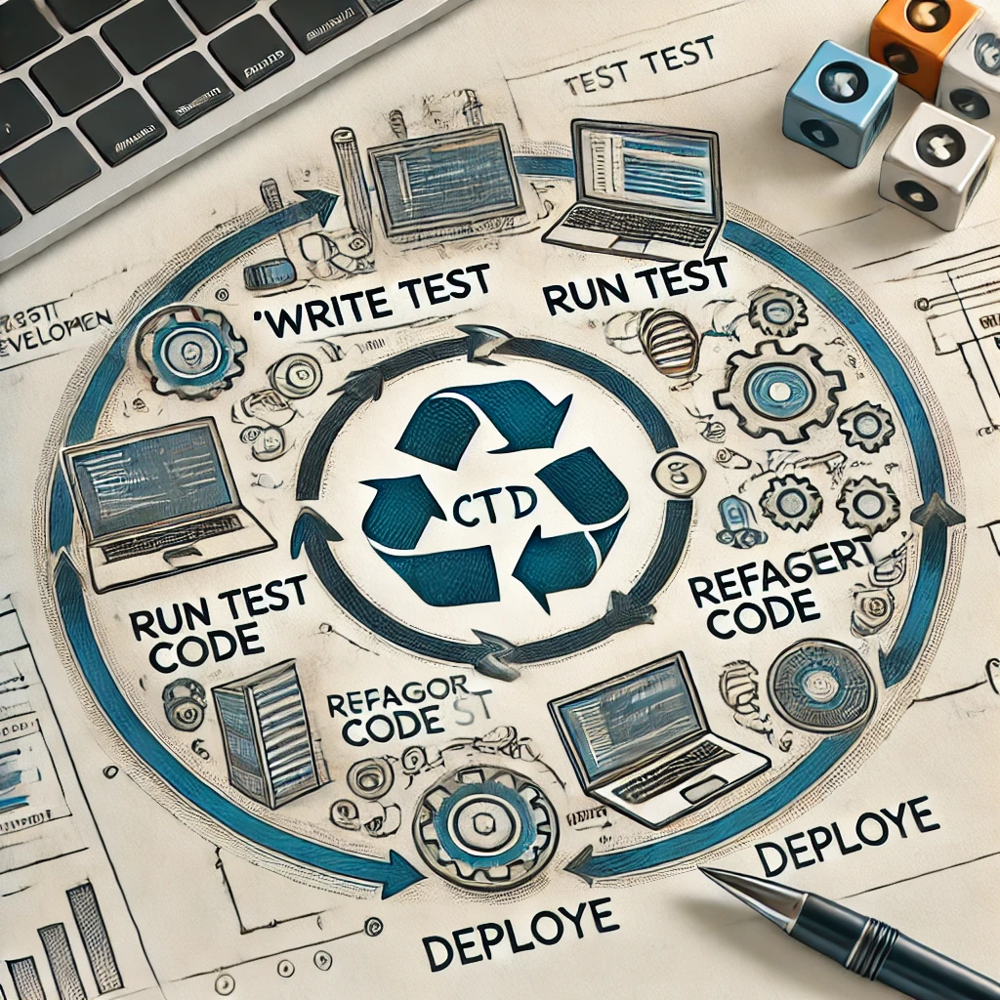

Mis on Continous Test-Driven Development?
Continuous Test-Driven Development (CTDD) on arendusmeetod, mis ühendab Test-Driven Developmenti (TDD) põhimõtted pideva integratsiooni (CI) ja pideva juurutamise (CD) protsessidega. See tähendab, et testid kirjutatakse enne koodi ning igat arenduse sammu saadab automaatne testide jooksutamine. CTDD rõhutab kvaliteedi tagamist kogu arendustsükli jooksul, pakkudes võimalikult varajast tagasisidet ja vältides vigade kuhjumist.

CTDD eelised ja puudused
Eelised:
- Kvaliteedi järjepidevus: CTDD ennetab regressioonvigu ja tagab koodi kvaliteedi.
- Kiire tagasiside: Testid ja CI/CD süsteem tuvastavad vead varakult, vähendades paranduskulusid.
- Automatiseerimine: CTDD sobib suurepäraselt automatiseeritud töövoogudele, säästes aega.
- Pidev juurutamine: Uued funktsioonid ja parandused jõuavad kasutajateni kiiresti ja tõrgeteta.
Puudused:
- Aeganõudev algfaasis: Testide loomine enne koodi võib tunduda aeglane ja nõuda rohkem algset pingutust.
- Võib takerduda halvasti kirjutatud testidesse: Kui testid ei ole hästi planeeritud, võivad need muutuda keeruliseks ja kergesti katki minna.
- Koolitusvajadus: CTDD nõuab meeskonnalt oskusi ja distsipliini TDD ning CI/CD meetodite rakendamisel.
Näide vahendist: Jenkins
Jenkins on populaarne CI/CD automatiseerimistööriist, mis toetab CTDD lähenemist. See võimaldab:
- Käivitada automaatseid teste igal koodimuudatusel.
- Integreerida erinevaid testiraamistikke ja tööriistu, nagu JUnit, Selenium või Cypress.
- Luua töövooge, mis hõlmavad koodi ehitamist, testimist ja juurutamist.